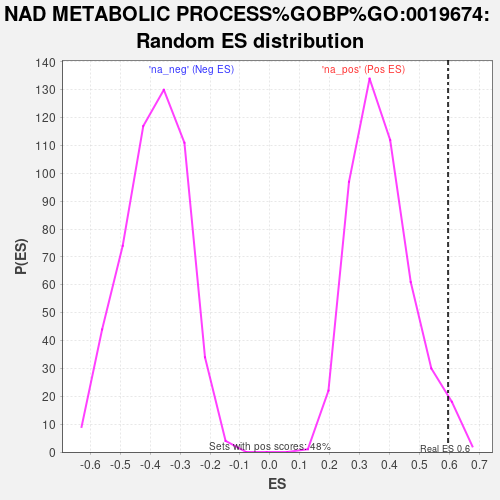

| | | Dataset | deg_ms |
| Phenotype | NoPhenotypeAvailable |
| Upregulated in class | na_pos |
| GeneSet | NAD METABOLIC PROCESS%GOBP%GO:0019674 |
| Enrichment Score (ES) | 0.5949107 |
| Normalized Enrichment Score (NES) | 1.6090592 |
| Nominal p-value | 0.025157232 |
| FDR q-value | 0.86569846 |
| FWER p-Value | 1.0 |
Table: GSEA Results Summary
 Fig 1: Enrichment plot: NAD METABOLIC PROCESS%GOBP%GO:0019674
Fig 1: Enrichment plot: NAD METABOLIC PROCESS%GOBP%GO:0019674
Profile of the Running ES Score & Positions of GeneSet Members on the Rank Ordered List
| SYMBOL | RANK IN GENE LIST | RANK METRIC SCORE | RUNNING ES | CORE ENRICHMENT | | 1 | NADSYN1 | 162 | 3.504 | 0.1351 | Yes |
| 2 | PARP9 | 198 | 3.325 | 0.2738 | Yes |
| 3 | NMRK1 | 443 | 2.572 | 0.3619 | Yes |
| 4 | PARP10 | 472 | 2.508 | 0.4663 | Yes |
| 5 | PARP16 | 954 | 1.706 | 0.4966 | Yes |
| 6 | SARM1 | 992 | 1.658 | 0.5640 | Yes |
| 7 | QPRT | 1455 | 1.266 | 0.5772 | Yes |
| 8 | NUDT12 | 1772 | 1.071 | 0.5949 | Yes |
| 9 | NAPRT | 2939 | 0.562 | 0.5159 | No |
| 10 | GPD1L | 3238 | 0.473 | 0.5097 | No |
| 11 | NADK2 | 4173 | 0.250 | 0.4379 | No |
| 12 | KMO | 5290 | 0.058 | 0.3418 | No |
| 13 | NUDT13 | 6934 | -0.215 | 0.2058 | No |
| 14 | HAAO | 7010 | -0.227 | 0.2089 | No |
| 15 | NMNAT1 | 7054 | -0.235 | 0.2151 | No |
| 16 | PC | 7273 | -0.285 | 0.2080 | No |
| 17 | KYNU | 8302 | -0.579 | 0.1418 | No |
| 18 | VCP | 8440 | -0.632 | 0.1567 | No |
| 19 | MDH1 | 8850 | -0.802 | 0.1547 | No |
| 20 | NAMPT | 9977 | -1.528 | 0.1204 | No |
Table: GSEA details [plain text format]

Fig 2: NAD METABOLIC PROCESS%GOBP%GO:0019674: Random ES distribution
Gene set null distribution of ES for NAD METABOLIC PROCESS%GOBP%GO:0019674